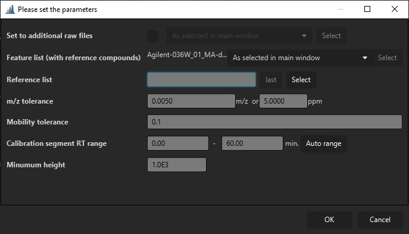

CCS Calibration and calculation¶
Accurate determination of CCS values requires a valid CCS calibration and molecule charge states to be detected.
- timsTOF raw data can be recalibrated using data analysis and imported in MZmine. The recalibrated data will be used by default. (see Calculating CCS values)
- mzML raw data requires the determination of a calibration function from the raw data (e.g. as detected features) or as import from an external file. (see Creating or importing a CCS calibration)
Creating or importing a CCS calibration¶
Importing a CCS calibration¶
Agilent calibration data can be imported from the "OverrideImsCal.xml" file in the Agilent raw data folder. Waters calibration data can be imported from the "mob_cal.csv" file in the Waters raw data folder. The "_extern.inf" file is also required, but will be read automatically when the "mob_cal.csv" is selected.
The calibration import is accessed via Feature list methods -> Processing -> External CCS Calibration. Then select the calibration "OverrideImsCal.xml"/"mob_cal.csv" from the raw data folder, and select the raw data files the calibration should be applied to.

Reference CSS calibration¶
If a mobility calibrant is infused during an HPLC run of every sample, a CCS calibration can be calculated on a per-raw file basis. (Common procedure on Bruker devices) Otherwise, a single run can be used to calibrate multiple files.
Please note that this is currently only supported for TIMS and DTIMS data.
The calibration module can be accessed via Feature list methods -> Processing -> Internal reference calibration.

Set to additional raw files If a calibration calculated from a single feature list shall be applied to multiple other raw files, the raw files can be selected here. This requires only a single raw file to be selected.
Feature list (with reference compounds) Specifies (a) feature list(s) that contains the
reference compounds. If multiple feature lists are selected, every feature list will be searched for
reference compounds, and the calibration will be used for the raw data files in the particular
feature list. This means that no raw data file may be selected. (Cannot set multiple calibrations to
a single raw file.)
If a single feature list is selected, the calibration may be applied to additional raw data files
via the Set to additional raw files parameter.
Reference list Specifies a ".csv" reference list of for CCS calibrant ions. Must contain the columns " mz", "mobility", "ccs", "charge". Columns must be separated by ";". The ion mode may be specified via the charge of the ion, e.g., as 1 or -1. Only the correct polarity will be used to calculate the calibration.
m/z tolerance The m/z tolerance for the reference compounds.
Mobility tolerance the mobiltiy tolerance to detect the reference compounds.
Calibration segment RT Range Specifies the rt range that shall be searched for calibrant ions. Usually either the beginning or end of a HPLC run.
Minimum height A minimum intensity for reference compounds to be used as calibrant signals for determination of the calibration.
Calculating CCS values¶
After a calibration as been set (Agilent/Waters/Bruker mzML) (Bruker tdf works out-of-the-box) CCS values can be calculated via Feature list methods -> Processing -> Calculate CCS values.
Here, a default charge state may be set, in case it could not be determined. Otherwise, the charge state determined via the isotope pattern will be used.